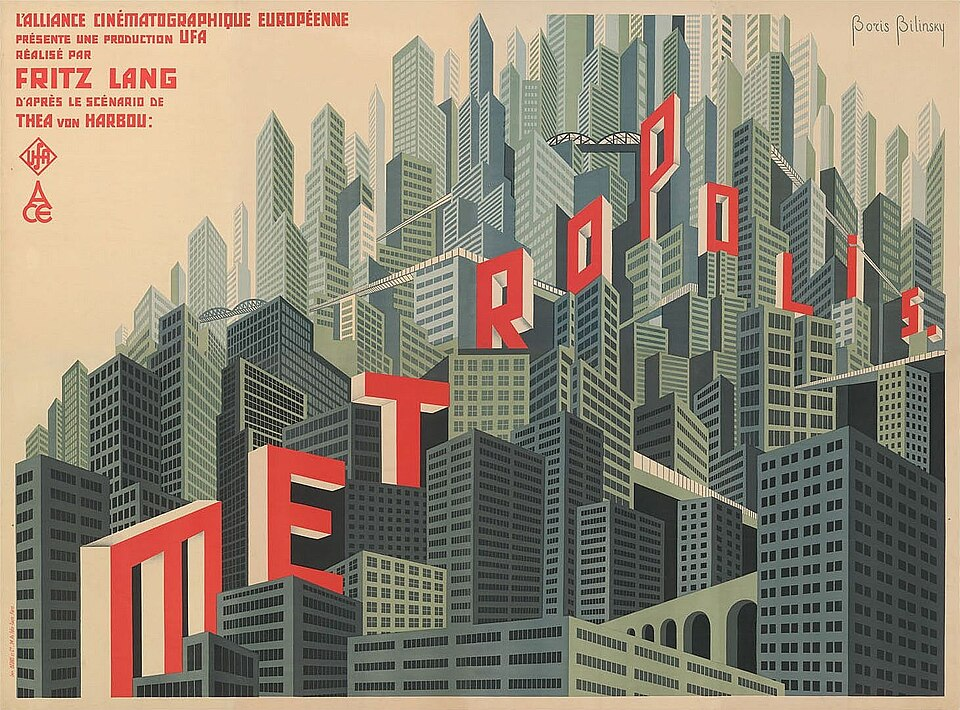

Эра немого кино
1905 – 1927

10 самых влиятельных фильмов эры
Единого официального списка нет. Этот список составлен по общим обзорам истории кино (источники — внизу главной страницы). Фильмы идут по году выпуска.
- Рождение нации (The Birth of a Nation)
Дэвид У. Гриффит, 1915 - Нетерпимость (Intolerance)
Дэвид У. Гриффит, 1916 - Кабинет доктора Калигари (Das Cabinet des Dr. Caligari)
Роберт Вине, 1920 - Нанук с Севера (Nanook of the North)
Роберт Флаэрти, 1922 - Носферату, симфония ужаса (Nosferatu)
Фридрих Вильгельм Мурнау, 1922 - Последний человек (Der letzte Mann)
Фридрих Вильгельм Мурнау, 1924 - Золотая лихорадка (The Gold Rush)
Чарли Чаплин, 1925 - Броненосец «Потёмкин» (Броненосец «Потёмкин» (оригинальное название))
Сергей Эйзенштейн, 1925 - Генерал (The General)
Бастер Китон и Клайд Брукман, 1926 - Метрополис (Metropolis)
Фриц Ланг, 1927